Доклад за дълбок родов произход
Джулиан Ненов
Археологически разкоп на един геном
Източни Балкани · Архипелагът Рюкю · Евразийската степ · 50 000 години
Резюме
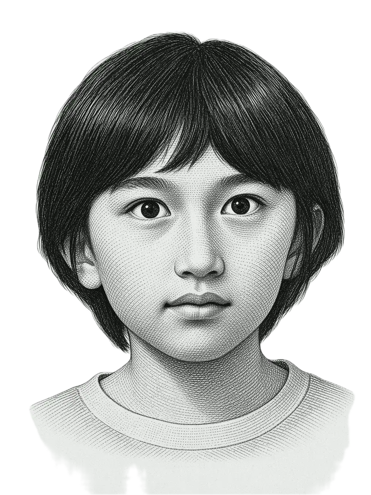
ДЖУЛИАННЕНОВ
Две родословни дървета, един геном
Следват седем пласта, всеки с по няколко хиляди години по-дълбок от предишния — но този геном разказва една история по две отделни линии едновременно. Преди да се спуснем във всяка от тях, ето какво показва цялата разкопка.
Геномът на Джулиан Ненов е истински профил с двоен произход: приблизително наполовина източнобалкански (бащин) и приблизително наполовина рюкюански японски (майчин). MyHeritage отчита японски (Окинава) 61,6% наред с балкански 21,2% и гръцки и албански 10,8%. Тези етикети не бива да се четат като генеалогични дялове; те отразяват два до голяма степен непресичащи се родови потока, които алгоритъмът проектира върху съвременни референтни популации. Означението „Окинава“ е особено показателно — то сочи по-силен компонент от ловци-събирачи Джомон, отколкото е типичен за континентално японския произход.
От бащина страна Джулиан наследява източнобалканския континуум, характерен за баща му Минко: най-близките съвременни съвпадения остават българите и сродните балкански групи, макар и разредени от майчиния източноазиатски принос (G25 разстояние до българите ~0,126). По-дълбоката структура повтаря класическия балкански модел — значителен палеобалкански (анадолски неолитен и местен) субстрат, балансиран, но с наклон към земеделците синтез от бронзовата епоха между анадолски земеделци и понтийски степен произход (свързан с Ямна), по-малък принос на западните ловци-събирачи и по-късно оформяне от славянските миграции, дали началото на средновековното българско население.
От майчина страна сигналът е отчетливо рюкюански, а не континентално японски. Сравненията с древна ДНК поставят източноазиатския компонент по-близо до ловците-събирачи Джомон, отколкото до хан китайците — в съответствие с по-високото запазване на предяйойски произход, характерно за островите Рюкю. Налице е и вторичен североизточноазиатски/вътрешноазиатски степен сигнал, който обяснява както централноазиатския процент, така и необичайно близкото древно съвпадение със средновековна монголска референция — тя се разбира най-добре като геометрична средна точка между западно- и източноевразийската вариация, а не като пряк монголски произход.
Още една нишка, която заслужава ред: тъй като бащината и майчината линия са се разделили толкова отдавна, двата сигнала от архаични видове в генома на Джулиан са асиметрични, а не идентични — неандерталският произход идва и от двамата родители от едно и също древно събитие, но слаб денисовански сигнал, проследим през Джомон и Онге от Андаманските острови, идва само по майчина линия.
| Пласт | Най-близко съвпадение | Разстояние |
|---|---|---|
| Съвременна популация (бащина) | Българи | 0,126 |
| Най-близко древно съвпадение като цяло | Монголия Архангай, ранно средновековие | 0,094 |
| Бронзова епоха (бащина) | Ямна / анадолски неолит | 0,195 / 0,206 |
| Мезолит (майчин) | Джомон пред хан | 0,407 / 0,478 |
Генетична стратиграфия
Лявата колона проследява бащината (източнобалканска) линия; дясната колона — майчината (рюкюанска) линия.
Картите са разположени при приблизителната датировка на всяка референтна проба върху една вертикална времева ос, която свива дълбокото време.
Оцветените зони отбелязват популации, които са част от реконструираната линия на Джулиан.
Късите чертички отбелязват сравнителни референции (напр. Хан Хенан), използвани само за измерване на разстояние.
Прозорецът на неандерталския примес се появява и в двете колони;
слабият денисовански сигнал се появява само от майчина страна.
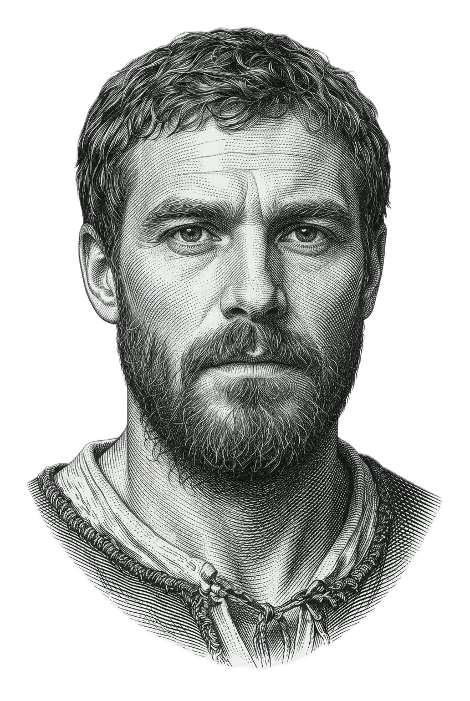
СЛАВЯНСКИПРОИЗХОД
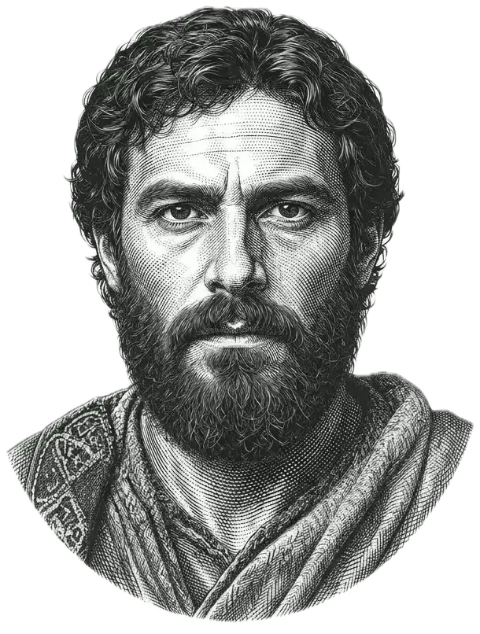
ТРАКИЙСКИПРОИЗХОД
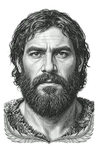
ЯМНАЙСКИПРОИЗХОД
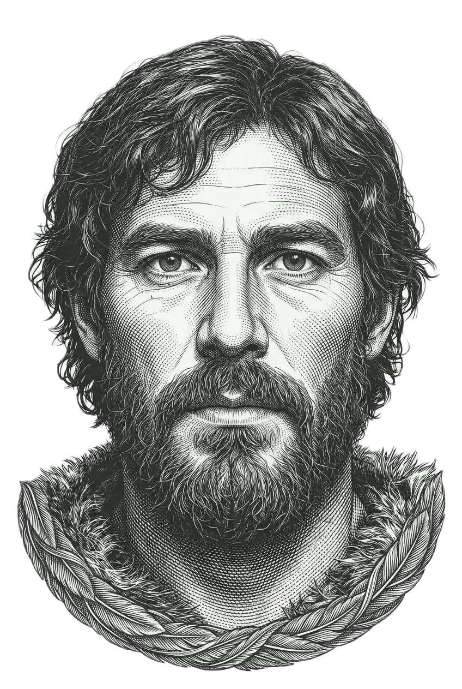
ИЛСПРОИЗХОД
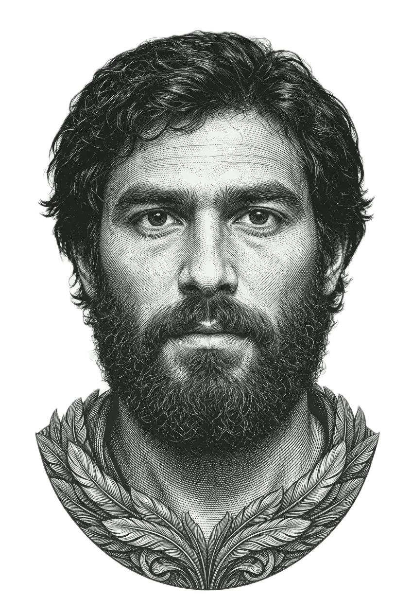
КЛСПРОИЗХОД
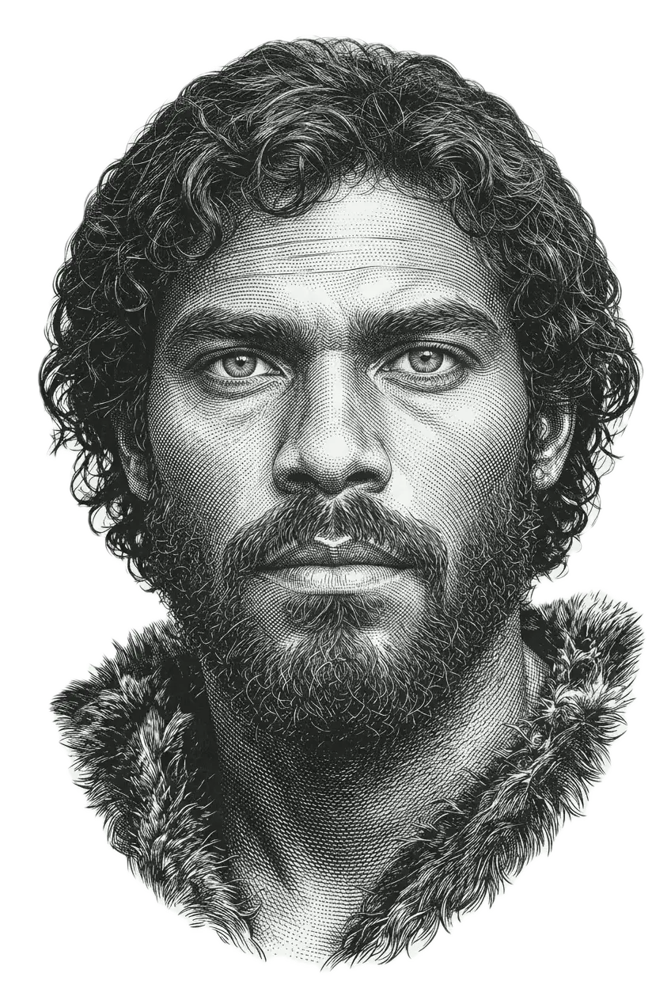
ЗЛСПРОИЗХОД
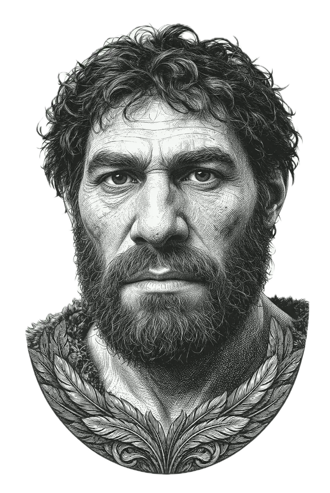
НЕАНДЕРТАЛСКИПРОИЗХОД
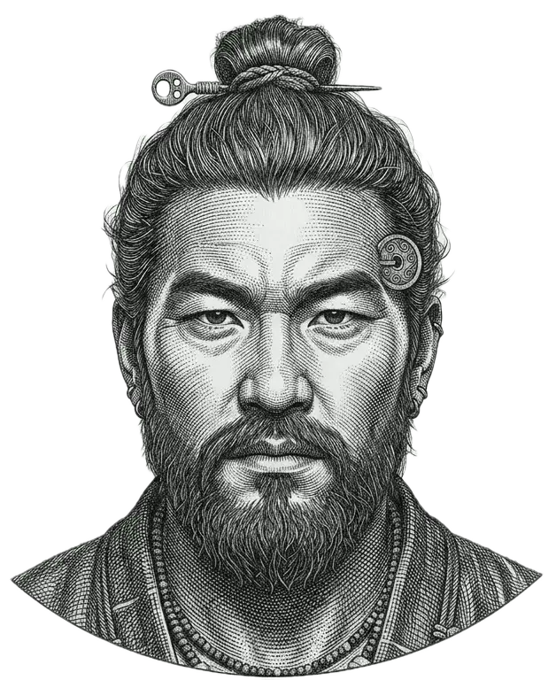
ЯЙОЙПРОИЗХОД
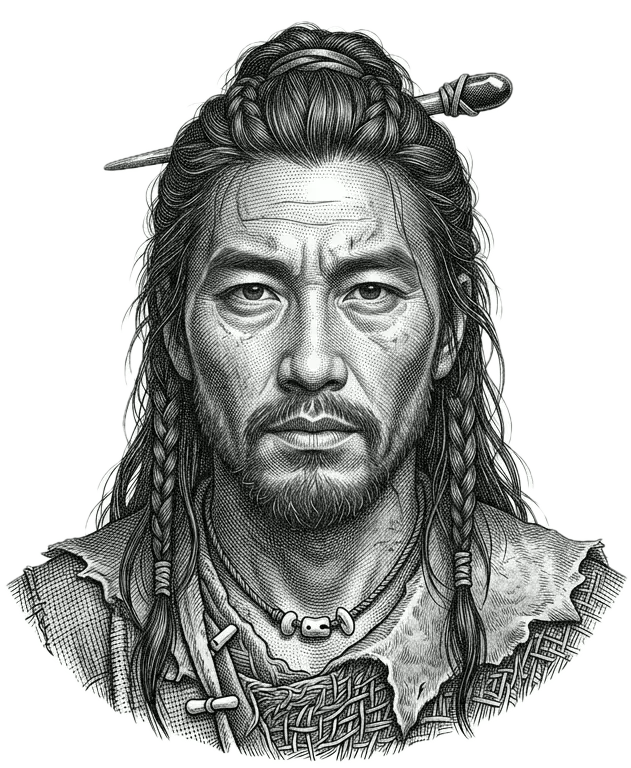
ХАН ХЕНАНРЕФЕРЕНЦИЯ
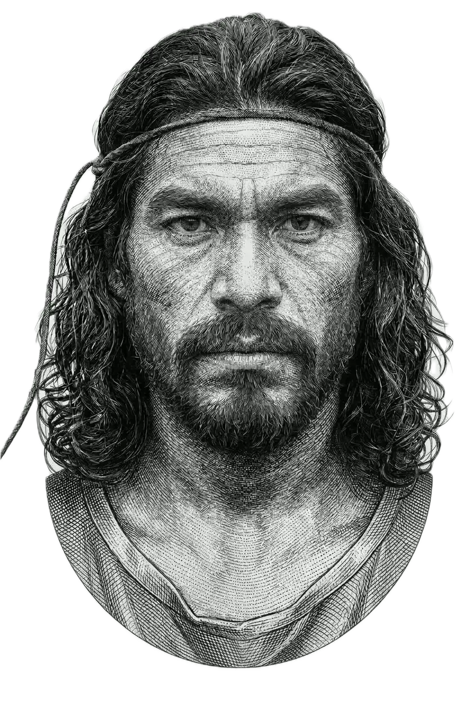
ДЖОМОНПРОИЗХОД
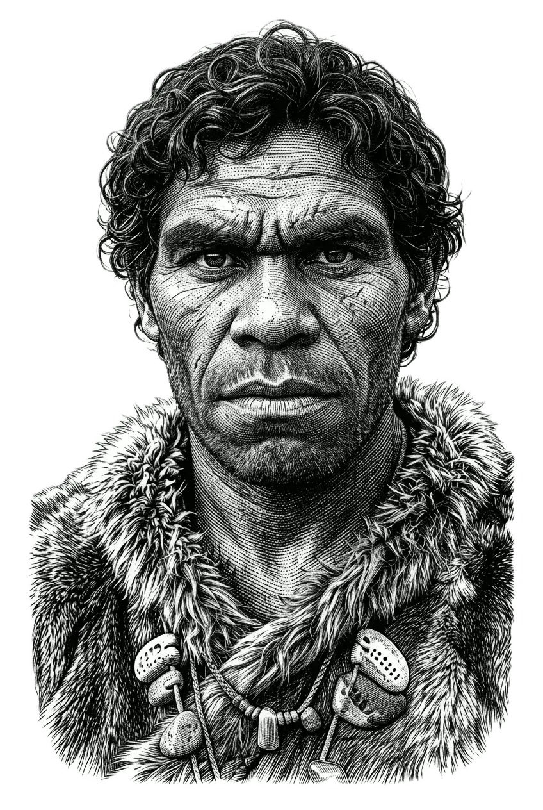
ДЕНИСОВАНСКИПРОИЗХОД
~1–4% от генома Прозорец на примеса: ~50 000–60 000 г. назад
~61% източноазиатски произход Наличие на популацията: ~681 г. – днес
подсилена при византийско владичество
~48% от бащиния геном (оценка) Културата налична: ~1500 г. пр.н.е. – 46 г.
~25% от целия геном, идващи по бащина линия ·
Bulgaria_EBA_Yamnaya е по-близка от
степната референция Самара Културата активна: ~3300–2600 г. пр.н.е.
19,48% ранни неолитни земеделци ·
Бонджуклу е по-близък, както в другите два доклада Земеделска култура: ~10 300–8000 г. назад
леко по-близки от КЛС при Джулиан,
обратно на модела при Минко/Стайко ИЛС линия: ~12 000–7000 г. назад
без ясно превъзходство, както в другите два доклада КЛС линия: ~13 000–9000 г. назад
MyHeritage: японски (Окинава) 61,6% Континуумът оформен: ~300 г. пр.н.е. – днес
Джомон (0,407) е с ~17% по-близо до Джулиан от хан (0,478) Земеделска култура на Жълтата река: ~9000–5000 г. назад
Повърхността
Какво ни казват етикетите — и какво не
Всеки доклад за произход започва с проценти и имена на места. Резултатите на Джулиан в MyHeritage гласят: японски (Окинава) 61,6%, балкански 21,2%, гръцки и албански 10,8%, източноевропейски 3,9%, централноазиатски 2,5%. Естественото четене подсказва човек, отчасти японец, отчасти балканец, отчасти грък — сякаш различни предкови популации са допринесли с отделни, преброими дялове. Това четене е погрешно.
Тези проценти не са дялове на произход в смисъла, в който ги показва едно родословно дърво. Те са резултат от алгоритъм, който сравнява ДНК на Джулиан със съвременни референтни популации и пита на кои живи групи най-много прилича. Различните референтни панели дават различни числа; един и същ геном, пуснат през друг калкулатор, ще даде други проценти.
Онова, което резултатът наистина ни казва, е, че геномът на Джулиан съдържа два основни потока на произход, които почти не се припокриват. Единият води към Източните Балкани — генетичния свят на съвременните българи, румънци и сродни групи. Другият води към рюкюанските острови в Южна Япония — район, белязан от повишен дял на произход от древните ловци-събирачи Джомон.
Означението „Окинава“ е най-важната подробност в целия доклад. Континенталните японци обикновено носят 10–15% произход от Джомон; жителите на Окинава могат да носят до ~40%, защото по-късното земеделско разширяване на Яйой е достигнало Рюкю по-непълно. Алгоритъмът засича по-силен сигнал от Джомон, отколкото би се очаквал при обикновен континентален японски произход.
Малкият централноазиатски процент не е отделна предкова популация. Той се явява като следа от бащина страна (през дълбоки степни връзки) и като по-голям сигнал от майчина страна (през североизточноазиатски произход). Значението му става по-ясно в по-дълбоките пластове.
Живи
популации
Картата на живите популации — къде се намира Джулиан днес
Когато ДНК на Джулиан се сравни със съвременни популационни средни стойности, най-близкото съвпадение е българите при разстояние 0,126. Това не е маргинален резултат. Дори на фона на приблизително 61% източноазиатски произход бащиният източнобалкански сигнал остава най-силният единичен полюс в профила му.
Сравнението баща–син показва разреждането ясно. Най-близките съвпадения на баща му са румънци (0,018) и българи (0,021) — едни от най-тесните възможни напасвания. Разстоянието на Джулиан до българите е 0,126, около шест пъти по-голямо, точно както се очаква при значителна примес от съвсем друга част на света. Същата популация все така тегли от същата посока; просто е разредена от майчиния принос.
Втората най-близка съвременна популация са монголците (0,356), следвани от японците (0,479) и корейците (0,487). Това, че монголците са пред японците, не означава, че Джулиан има монголски предци. То означава, че източноазиатският компонент на генома му е по-близо в генетичното пространство до монголските средни стойности, отколкото до съвременните японски — модел, който по-дълбоките пластове ще помогнат да се обясни.
Двупопулационните оракули връщат същата основна картина през различни лещи: приблизително 50% японци + 50% румънци или 50% корейци + 50% румънци. Еднопопулационните калкулатори често връщат уйгури или узбеки — не заради централноазиатски произход, а защото самите тези популации стоят близо до средата 50/50 между Западна и Източна Евразия и затова служат като удобни геометрични заместители.
Етнически оценки на MyHeritage
| Японски (Окинава) | 61,6% |
| Балкански | 21,2% |
| Гръцки и албански | 10,8% |
| Източноевропейски | 3,9% |
| Централноазиатски | 2,5% |
G25 разстояние — съвременни популации
| Българи | 0,126 | |
| Монголци | 0,356 | |
| Японци | 0,479 | |
| Корейци | 0,487 |
Двупопулационните оракули на GEDmatch потвърждават същата картина от друг ъгъл. Eurogenes K13 намира най-доброто двупопулационно напасване като 50% японци + 50% румънци при разстояние 3,84. Dodecad K12b намира 50% корейци + 50% румънци при разстояние 4,91. Те не си противоречат — отразяват една и съща реалност през различни референтни лещи, като корейците и японците служат като взаимозаменяеми заместители на източноазиатския компонент, а румънците — като най-близък наличен заместител на източнобалканския геном на баща му. Еднопопулационните калкулатори връщат уйгури или узбеки като най-близко съвпадение — не защото Джулиан има централноазиатски произход, а защото самите тези популации са приблизително 50% западноевразийски и 50% източноазиатски, което ги прави най-близкото налично еднопопулационно приближение на профил, който е истински и поравно и двете.
Средновековие
500–1200 г.
Средновековният пласт — славянските миграции и бащиното формиране
Като свалим повърхностния пласт от съвременни популационни етикети, стигаме до първия исторически пласт: средновековните миграции, оформили популациите, на които бащиният геном на Джулиан най-много прилича.
Между VI и VIII век от н.е. славяноезични групи се разпростират от района на Припят към Балканите. Анализът на бащиния геном определя славянския принос на около 32%, пристигнал през Панонския коридор, а не по директен източен път. По-големият компонент — приблизително 48% — е съществуващият палеобалкански субстрат (тракийски, дакийски, илирийски и романизирани местни популации). Допълнителен византийски средиземноморски пласт от около 20% отразява вековното източноримско присъствие. Заедно тези потоци са формирали средновековния български генетичен профил, който остава най-близкото съвременно съвпадение на Джулиан.
Този компонент от византийската епоха заслужава по-внимателен поглед, защото етикетът може да подведе. Изследванията на древна ДНК от римския период на Балканите не откриват генетична следа от заселници от Италия от желязната епоха, въпреки вековния римски политически и военен контрол — вместо това имперският период носи документиран приток на анадолски и западноазиатски произход, съсредоточен в сравнително тесен период от приблизително I до III век от н.е. Византийските векове, които следват, поддържат тази анадолско-балканска връзка чрез търговия, администрация и движение на население, без да внасят втора вълна със сравним размер. „Италианският“ компонент в разбивката K36 по-долу отразява същата по-широка средиземноморско-анадолска близост, а не произход от римски колонисти — разграничение, което данните за древна ДНК очертават ясно, дори когато съвременните калкулатори в популационната генетика заемат национални етикети за удобство.
Джулиан наследява цялото това бащино формиране в приблизително половината от генома си. Европейските компоненти при различните калкулатори го възстановяват последователно като източнобалкански + източносредиземноморски + източноевропейски отпечатък.
Когато базата данни с древна ДНК се претърси за най-близкото древно съвпадение на Джулиан като цяло, резултатът е Монголия Архангай, ранно средновековие, при разстояние 0,094 — по-близо от всяка европейска или японска древна проба в тествания набор. Това не означава монголски произход. Средновековна Вътрешна Азия е стояла на генетично кръстопът между западноевразийския степен свят и източноазиатските светове и затова е геометрична средна точка, която необичайно добре съвпада с истински 50/50 западно-източен геном.
| Древна популация | Разстояние | |
|---|---|---|
| Монголия Архангай, ранно средновековие | 0,094 | |
| Корея Чанхан | 0,382 | |
| Япония, ловци-събирачи Джомон | 0,407 | |
| Хан Хенан | 0,478 |
Бронзова епоха
3000–1200 г. пр.н.е.
Бронзовият пласт — степни скотовъди от две посоки
Като разкопаваме под средновековния пласт, стигаме до основите от бронзовата епоха, които лежат под двете страни на произхода на Джулиан. Тук картината от древна ДНК става структурно ясна. В Модел C — тестване на координатите на Джулиан спрямо древни популации, представляващи трите основополагащи потока на европейския произход — Ямна и анадолският неолит излизат близки и добре разграничени, докато Джомон и хан са много по-далечни:
| Древна популация | Разстояние | |
|---|---|---|
| Русия Самара, ранна бронзова епоха, Ямна | 0,195 | |
| Турция Бонджуклу N (анадолски неолит) | 0,206 | |
| Япония Джомон SG | 0,400 | |
| Люксембург Лошбур ЗЛС | 0,425 | |
| Хан Хенан | 0,478 |
Ямна при 0,195 и анадолският неолит при 0,206 са двете най-близки древни популации след средновековна Монголия и двете са недвусмислено бащини по произход. Те представляват двата най-големи основополагащи потока на източнобалканския геном: анадолските земеделци, пристигнали на Балканите преди около 8000 години, и степните скотовъди от бронзовата епоха, известни като ямнайци, които се разливат към Европа от понтийско-каспийската степ преди около 5000 години.
Ямнайците са сред най-значимите популации в европейската праистория. Произлезли от сливането на източни ловци-събирачи и кавказки ловци-събирачи в понтийската степ, те се разширяват с изключителна бързина във всички посоки около 3000 г. пр.н.е., носейки коне, колесни превозни средства и праиндоевропейски език — предшественик на повечето съвременни европейски езици, включително българския, на който говори бащата на Джулиан. Приблизително 25% от целия геном на Джулиан води началото си от това единствено разширяване от бронзовата епоха, пристигнало по бащината му балканска линия.
Онова, което разстоянието 0,094 до Монголия Архангай, ранно средновековие, започва да подсказва — и майчините пластове по-долу ще го развият — е, че степен сигнал пристига и от източната посока, през майчиния произход. Това не са едни и същи степни популации. Ямнайците се разширяват на запад от понтийската степ; вътрешноазиатският степен свят, свързан с майчиния произход на Джулиан, се разпростира по друго, източно рамо на същата необятна тревна система. Джулиан носи степен произход от двата края на евразийската степ — единия наследен от български баща, другия — пристигнал чрез рюкюанска майка, чиято собствена генетична история включва североизточноазиатски континентален компонент.
Хромозомното оцветяване на GEDmatch предлага визуално потвърждение на картината от бронзовата епоха, което си струва да се прочете директно. При преглед на бащините редове най-плътният и най-последователен оранжев сигнал по хромозомите на Джулиан идва не от редовете на Ямна, а от анадолските неолитни индивиди от Барджън — множество проби от Барджън показват силно припокриване на алели почти във всяка хромозома. Редовете на Ямна и степта Самара са ясно налице, но визуално вторични спрямо Барджън. Тази относителна плътност е значима: тя отразява източнобалканския генетичен профил, при който произходът от анадолски неолитни земеделци обикновено надвишава степния в сравнение с по-северните европейски популации. Също толкова забележителни са пробите Унгария — неолит и Унгария — бронзова епоха, които се явяват като силни съвпадащи заместители навсякъде в оцветяването. Те не са доказателство за отделен унгарски приток — те са генетичният отпечатък на самия Панонски коридор. Популациите от бронзовата епоха, обитавали вече Унгарската котловина, са били погълнати от славянските миграции, движещи се на юг през същия коридор, а произходът им е бил вплетен във вълната, преди тя да достигне Балканите. Редовете за Унгария в оцветяването са запис на ниво хромозома на този преход. Редовете на ловците-събирачи Мотала от Швеция са налице, но сравнително оскъдни, в съответствие с това, че източнобалканският профил носи по-нисък дял на западни ловци-събирачи, отколкото биха показали скандинавски или северноевропейски популации.
Диаграмата по-долу обобщава относителната плътност на припокриване на алели, наблюдавана в хромозомното оцветяване на Джулиан в GEDmatch — колко последователно редът на всяка референтна популация показва оранжево по 22-те му хромозоми. Това е качествено подреждане по сила на сигнала, а не процент от произхода. Представени са и двете страни на генома му: бащината западноевразийска последователност отляво, майчината източноазиатска — отдясно.
Неолит
7000–3000 г. пр.н.е.
Неолитният пласт — земеделци от западната страна
Под степния пласт от бронзовата епоха от бащина страна лежи най-старият значителен европейски принос в генома на Джулиан: ранните неолитни земеделци, разпространили земеделието от Анатолия в Европа преди около 8000 години. Калкулаторът K10 Ancient приписва на Джулиан 19,48% произход от ранни неолитни земеделци — приблизително 40% от бащиния му европейски принос, разреден от по-високия дял на баща му чрез очакваната 50% майчина примес.
Турция Бонджуклу неолит при разстояние 0,206 и Турция Барджън LN при разстояние 0,230 се появяват заедно в резултатите на Джулиан от древна ДНК като най-ясния сигнал на анадолски земеделци. Това са едни от най-добре проучените древни земеделски популации в света — хора, напуснали района на днешна северозападна Турция преди около 8000–9000 години, преминали в Гърция и България и разпространили земеделието, керамиката и постоянното заселване из Европа. Балканите са първата им европейска дестинация и това наследство е измеримо във всеки балкански геном и до днес. Калкулаторът K10 Ancient приписва на Джулиан общо 19,48% произход от ранни неолитни земеделци — цифра, която, предвид приблизително равните бащин и майчин принос в генома му, вероятно представлява по-голямата част от бащиния му европейски земеделски субстрат, а не майчин сигнал.
Този анадолски неолитен произход е онова, което MyHeritage отчасти улавя в компонента „гръцки и албански“ (10,8%). Съвременните гърци носят висок дял произход от ранни европейски земеделци — сред най-високите във всяка европейска популация — и когато алгоритъмът открие средиземноморски земеделски сигнал в генома на Джулиан, го картографира върху съвременната популация, която най-силно го изразява. Това не е италиански или гръцки произход в никакъв генеалогичен смисъл. Това е общата земеделска основа на цялото източно Средиземноморие, пристигнала на Балканите хилядолетия преди да съществува понятието „гръцка“ или „италианска“ нация.
От майчина страна има паралел с неолитната история, макар да е протекъл независимо и на хиляди километри разстояние. Хората от Яйой — земеделци и металурзи от Корейския полуостров — пристигат в Япония преди около 2300 години и преобразяват архипелага, поглъщайки и в повечето райони до голяма степен замествайки съществуващото население на Джомон. На островите Рюкю тази трансформация е по-непълна. Майката на Джулиан носи рюкюански генетичен профил, в който яйойският континентален пласт е налице, но не е затрил по-старата основа на Джомон в същата степен, както на континента. Древното разстояние до Корея Чанхан от 0,382 — между средновековна Монголия и Джомон в сравненията с древна ДНК — отразява този внесен чрез Яйой континентален пласт в майчиния произход.
Мезолит
10 000–7000 г. пр.н.е.
Мезолитният пласт — два свята на ловци-събирачи
Под земеделските пластове от двете страни на произхода на Джулиан стигаме до най-старите оцелели човешки популации в Европа и Източна Азия: ловците-събирачи, предхождали изцяло земеделската революция, чиито генетични наследства са били отчасти, но никога напълно заличени от земеделските разширявания, последвали след това.
От бащина страна западните ловци-събирачи — следледникови горски хора, обикаляли Европа хилядолетия преди пристигането на първите земеделци — допринасят приблизително 15% от генома на бащата на Джулиан, достигайки до Джулиан в приблизително половината от този дял след майчиното разреждане. Люксембург Лошбур е на разстояние 0,425 в резултатите на Джулиан от древна ДНК — най-далечната от основните тествани древни популации, като сигналът ѝ е налице, но математически засенчен от много по-големия източноазиатски компонент, който доминира общите му координати. Наследството на ЗЛС е въпреки това реално и видимо в конкретни генетични маркери — най-вече в хаплотипа HERC2 за сини очи, който Джулиан е наследил от баща си. Древната ДНК от мезолитни европейски ловци-събирачи, включително Ла Браня в Испания и Лошбур в Люксембург, последователно показва варианта за сини очи с висока честота. Това е една от най-старите черти във фенотипа на Джулиан — по-стара от светлата кожа, по-стара от поносимостта към лактоза, предшестваща изцяло земеделието в Европа.
От майчина страна хората от Джомон на японския архипелаг заемат равностойна позиция — древни, предземеделски, генетично изолирани и запазени най-пълно в популациите, получили най-малко последваща примес. Япония, ловци-събирачи Джомон, е на разстояние 0,407 в резултатите на Джулиан от древна ДНК. Разликата между това разстояние и разстоянието до Хан Хенан от 0,478 — 17% — поставя източноазиатския произход на Джулиан безспорно по-близо до ловците-събирачи Джомон, отколкото до която и да е континентална източноазиатска земеделска популация. Това е количественото потвърждение на онова, което подсказва означението „Окинава“ в MyHeritage: източноазиатският компонент на генома му е близък до Джомон, а не до хан.
Хората от Джомон пристигат в японския архипелаг преди приблизително 30 000–16 000 години, в периоди, когато по-ниското морско равнище е позволявало сухоземни преходи от азиатския континент. След като моретата се покачват, те остават изолирани хилядолетия, развивайки генетичен профил, какъвто няма никъде другаде на земята. Те са били морски ловци, рибари и строители на черупкови купчини — майстори на най-старата в света изпичана керамика. Древната ДНК показва, че са имали тъмна кожа, вълнеста или къдрава коса и двойни клепачи — фенотип, съществено различен от съвременните континентални източноазиатци, отразяващ дългата им изолация от континенталните популации, които в крайна сметка ще произведат земеделците Яйой.
Архаичен
50 000+ г. назад
Архаичният седимент — неандерталци, денисовци и най-старото наследство
На най-дълбокия пласт на разкопката, под всички исторически миграции и праисторически движения на популации, лежат най-старите генетични нишки в генома на Джулиан: ДНК, наследена изобщо не от съвременни хора, а от два други човешки вида, с които нашите предци са се срещали и кръстосвали преди десетки хиляди години.
Неандерталското наследство
Геномът на Джулиан съдържа неандерталска ДНК — както и този на всеки човек от неафрикански произход, който носи приблизително 1–4% неандерталски произход от кръстосване между съвременните хора и неандерталците в Западна Азия преди приблизително 50 000–60 000 години. Хромозомното оцветяване на Джулиан в GEDmatch включва неандерталски референтни геноми в горните си редове и си струва да се уточни какво точно означават оранжевите сегменти в тези редове. Всеки оранжев блок показва, че неандерталски референтен геном споделя алели с Джулиан в този хромозомен район. Това е мярка за припокриване на алели, а не твърдение за пряк произход от конкретен неандерталски индивид.
Имайки това предвид, оцветяването показва ясно и повтарящо се споделяне на алели с пещерата Виндия (Хърватия, на ~40 000–44 000 години) — разпръснати съвпадения по множество хромозоми. Това е напълно очаквано и неизненадващо, тъй като Виндия е неандерталският геном с най-високо качество в Европа, секвениран досега, и служи като основна референция за изследванията на неандерталската интрогресия по света. Съвременните евразийци обикновено показват най-голямо откриваемо припокриване на алели с популации, подобни на Виндия; сигналът на Джулиан от Виндия отразява това общо човешко наследство, а не конкретен хърватски неандерталски предшественик. По-слаб, но налице сигнал се появява и спрямо Мезмайска (Адигея, Русия, на ~29 000 години) — кавказки неандерталски геном. И тук това отразява споделяне на алели, съвместимо с неандерталска интрогресия по принцип, а не произход от този индивид.
Онова, което хромозомното оцветяване разкрива много по-силно, е всичко, което следва след неандерталските редове. Оранжевите ленти се разширяват драматично и непрекъснато през референтните геноми на западни ловци-събирачи, анадолски неолитни земеделци, камбановидни чаши, степта Ямна и европейската бронзова епоха от бащина страна — и през референтните геноми на Джомон, Айну и Североизточна Азия по-надолу. Този неудържим сигнал от нормалната западноевразийска популационна последователност и от свързаните с Джомон източноазиатски популации е истинското заглавие на оцветяването. То е визуално потвърждение на точно онова, което откриват G25 моделите: геномът на Джулиан се обяснява последователно и изцяло от вече описаната археологическа разкопка — ЗЛС, земеделци и степ от бащина страна, Джомон и Североизточна Азия от майчина — а неандерталските редове най-горе представляват най-старото и най-универсално човешко наследство, което двете линии споделят.
Джулиан наследява неандерталски интрогресирани сегменти и от двамата родители, видими като разпръснато споделяне на алели спрямо референтните редове Виндия и Мезмайска, описани по-горе. Тези интрогресирани сегменти, натрупани в генома от двете родителски линии, най-често засягат кератина и функцията на кожата, имунния отговор и кръвосъсирването — адаптации, които се оказват полезни, когато съвременните хора навлизат в среди, където неандерталците са живели стотици хиляди години.
Денисованското наследство — по-дълбокият сигнал
За разлика от неандерталската примес, която е разпределена сравнително равномерно във всички неафрикански популации, денисованската примес е географски изкривена. Континенталните източноазиатци носят приблизително 0,2% денисовански произход. Популациите, свързани с древния югоизточноазиатски и тихоокеански свят, носят значително повече — до 5% при папуаските и меланезийските популации. Хората от Джомон, чийто произход формира голяма част от майчиния геном на Джулиан, са носели произход, свързан с Онге, наследен от древни югоизточноазиатски ловци-събирачи, които преди това са се срещали и кръстосвали с денисовци по време на дългата си миграция на юг през Югоизточна Азия.
Модел D — проектиран специално за откриване на архаични и свързани с денисовци сигнали — сравнява координатите на Джулиан с Онге (древни жители на Андаманските острови), папуанци, Джомон, Ямна и анадолски неолит. Резултатите:
| Популация | Разстояние | Какво представлява |
|---|---|---|
| Русия Самара, ранна бронзова епоха, Ямна | 0,195 | Бащина степ от бронзовата епоха — близка и ясна |
| Турция Барджън LN SG | 0,230 | Бащин анадолски неолит |
| Онге — Андаманските острови | 0,351 | Дълбоки югоизточноазиатски ловци-събирачи — носители на денисованска примес |
| Япония, ловци-събирачи Джомон | 0,407 | Носи произход, свързан с Онге |
| Папуанци от HGDP | 0,744 | Най-висок дял на денисовански произход — много далечни |
Онге са една от най-генетично изолираните популации на земята — преки потомци на първите съвременни хора, напуснали Африка по южен крайбрежен маршрут преди приблизително 60 000–70 000 години, живеещи на Андаманските острови с минимален външен контакт оттогава. Те носят втората най-висока денисованска примес сред всички съвременни популации след папуанците. Появата им на разстояние 0,351 в архаичния модел на Джулиан, по-близо от Джомон (0,407), отразява факта, че самите хора от Джомон са носели произход, свързан с Онге, като част от собствената си дълбока история. Сигналът от Онге в координатите на Джулиан пристига през канала на Джомон, а не като отделен или пряк източник.
Разстоянието до папуанците от 0,744 е определено голямо. Джулиан няма пряк меланезийски или новогвинейски произход. Денисованският сигнал в генома му е древен, разреден и предаден през верига от междинни популации — денисованска интрогресия в древни югоизточноазиатски ловци-събирачи, наследена от предците на Джомон, запазена в рюкюанските популации и предадена на майката на Джулиан, а от нея — на него. Резултатът му от K10 Ancient улавя това независимо: 3,26% берингийски и 1,16% океански компоненти представляват точно този предаден чрез Джомон дълбок югоизточноазиатски субстрат.
доказателства
Където двата свята могат да се прочетат в една единствена базова двойка
Предходните пластове описаха произхода на Джулиан чрез популационна статистика, разстояния от древна ДНК и исторически разказ. Последният пласт от доказателства е най-директният: конкретни позиции в собствената му ДНК, където двата потока на произход се виждат един до друг, кодирани в един-единствен нуклеотид.
На позиция rs17822931 в гена ABCC11 генотипът на Джулиан е TC — хетерозиготен. Баща му носи CC на тази позиция: влажна ушна кал, предковият западноевразийски вариант, срещан с почти 100% честота в европейските популации. Майка му почти със сигурност носи TT: суха ушна кал, производният източноазиатски вариант, срещан с почти 100% честота при японци, корейци и китайци и почти липсващ при европейците. Алелът T е част от координирано селективно пометаване, преминало през източноазиатските популации преди приблизително 30 000 години и засегнало едновременно дебелината на космените фоликули, плътността на потните жлези и типа ушна кал като свързана генетична единица. Генотипът TC на Джулиан означава, че е получил западноевразийския C от източнобалканската линия на баща си и източноазиатския T от рюкюанското наследство на майка си. В една-единствена позиция от генома му и двата произхода са четими — по една буква.
Локусите за цвят на очите и пигментация разказват същата история. Неговият генотип HERC2 GA на основния превключвател за цвят на очите съчетава GG на баща му — хаплотипа за сини очи, наследен в крайна сметка от мезолитните западни ловци-събирачи, които са го носели с висока честота — с вероятния алел A на майка му, предковия вариант за тъмни очи. Джулиан вероятно има лешникови или междинни очи: най-старият вариант за цвят на очите в Европа среща най-стария вариант за цвят на очите в Източна Азия, хетерозиготни в един индивид. Генотипът му SLC45A2 CG следва същата структура — алелът G на баща му, европейският вариант за светла кожа, разпространил се с неолитните земеделци, в двойка с предковия алел C от произхода на майка му. Междинна пигментация е очакваният резултат и тя е буквалната средна стойност на два генетични свята, разделили се преди 40 000 години.
Всеки хетерозиготен SNP в генома на Джулиан на позиция, където баща му и майка му носят противоположни алели, е молекулярен запис на две линии, срещнали се за първи път. ABCC11 TC, HERC2 GA, SLC45A2 CG — това не са абстракции или оценки. Това са конкретните нуклеотиди, където източнобалканското кръстопътие и рюкюанският архипелаг се докосват, записани на езика на ДНК с точност до една буква, четими от суровия му файл с данни.
SNP маркери
Ключови родоинформативни и белегови генотипове
Директни генотипни определяния от суровия ДНК файл на Джулиан от MyHeritage. Хетерозиготните позиции при родоинформативни локуси са биологично най-значимите записи в тази таблица — това са позиции, където двете родителски линии са директно четими, по един алел.
| Ген | Генотип | Произход | Значение |
|---|---|---|---|
| ABCC11 | TC | Запад CИзток T | Тип ушна кал и потни жлези — T, наследен от източноазиатската майка, C — от балканския баща. Най-прякото демонстриране на двойно наследство на един локус в набора данни. |
| HERC2 | GA | ЗЛС GИзток A | Основният превключвател за цвят на очите — G (хаплотип за сини очи, мезолитен произход от ЗЛС) от бащата, A (тъмен, предков) от майката. Вероятни са лешникови или междинни очи. |
| SLC45A2 | CG | Запад GИзток C | Меланинов път — G (европейски вариант за светла кожа, произход от неолитните земеделци) от бащата, C (предков) от майката. Очаква се междинна пигментация. |
| HERC2 (OCA2) | GA | БащинМайчин | Регулатор на пигментацията OCA2 — хетерозиготен, съответстващ на междинния пигментационен профил, указан от другите пигментационни локуси. |
| TYR | AC | БащинМайчин | Ензим тирозиназа — хетерозиготен на този локус за производство на меланин, смесен профил на чувствителност към UV. |
| LCT / MCM6 | AG | Бащин алел | Персистенция на лактазата — хетерозиготен, едно копие на европейския алел за поносимост към лактоза, наследено от бащата. Очаква се пълна поносимост към лактоза. Този вариант се разпространява със скотовъдните популации от бронзовата епоха и е рядък извън Европа и сродните групи. |
| ADH1B | CC | Бележка | Метаболизъм на алкохола — CC е стандартният европейски вариант. Бързо метаболизиращият източноазиатски алел T (свързан с реакцията на зачервяване при алкохол) не е наследен. В съответствие с произхода със силен дял на Джомон, където честотата на този алел се различава от континенталните хан популации. |
| MTHFR | GG | И двата нормални | Метаболизъм на фолати — хомозиготен нормален и на двете тествани позиции. Не е наследен алелът C677T с намалена активност, носен от баща му. Няма проблем с обработката на фолати. |
| BDNF | CC | Val/Val | Мозъчен невротрофичен фактор — стандартен вариант с висока невропластичност. Не е наследен алелът Met66, носен от баща му. Оптимална изходна секреция на BDNF, зависима от активността. |
| COMT | GG | Val/Val | Катаболизъм на допамина в префронталната кора — Val/Val означава по-бърза деградация на допамина, свързана с по-ниско изходно ниво на префронтален допамин и често описвана като по-голяма устойчивост при остър стрес, с известна цена за работната памет в сравнение с профила Met/Met. |
| CYP1A2 | AA | Бърз | Метаболизъм на кофеина — бърз метаболизатор. Преработва кофеина ефективно; по-нисък сърдечносъдов риск от редовна консумация на кафе в сравнение с бавните метаболизатори. |
| TCF7L2 | CT | Наблюдение | Диабет тип 2 — най-повтореният рисков вариант в човешкия геном. Хетерозиготният CT носи умерено повишен риск за целия живот. Препоръчва се дългосрочно внимание към хранителния режим. |
| FTO | AT | Смесен | Метаболитен риск — AT междинен риск. В комбинация с TCF7L2 CT метаболитната картина заслужава дългосрочно внимание, без да буди тревога. |
| APOE | CC | Благоприятен | Риск от болест на Алцхаймер — CC на тази позиция се свързва със стандартен или намален рисков профил. Не е открит повишен сигнал на APOE ε4. |
картина
Пълната разкопка — какво разказват заедно всичките седем пласта
Разкопката е завършена. Седем пласта време са отстранени и онова, което разкриват, не е мозайка от отделни произходи, а една-единствена свързана история за това как две дълго разделени човешки линии се срещат в един човек.
На повърхността геномът на Джулиан се регистрира най-силно като български — най-близката съвременна популация при разстояние 0,126, бащината котва, която остава доминиращият сигнал дори при 61% източноазиатска примес. Под тази повърхност средновековният пласт разкрива двата потока, изградили българския генетичен профил: палеобалкански субстрат от приблизително 48% — траките, даките, илирите и романизираните балкански популации, налични вече преди миграциите — и принос от славянската миграция от приблизително 32%, пристигнал през Панонския коридор, вече смесен със средноевропейски елементи. Най-близкото единично древно съвпадение в цялата база данни — Монголия Архангай, ранно средновековие, при разстояние 0,094 — се намира в същия средновековен пласт, находка, която данните представят, без да изискват разрешаване.
По-дълбоко бронзовата епоха се разкрива едновременно от двете страни. Ямнайските скотовъди при разстояние 0,195 и анадолските земеделци при разстояние 0,206 са двата най-стари значителни бащини приноса — степта и почвата на източнобалканския свят. От майчина страна древната проба Корея Чанхан при 0,382 бележи континенталния източноазиатски пласт, внесен чрез земеделското разширяване на Яйой към Рюкю — същият процес, който се случва в Япония, както анадолското разширяване се случва в Европа, пристигащ от Корейския полуостров, а не от Анатолия, но структурно идентичен: земеделско население, преобразяващо живота на древни ловци-събирачи.
В мезолитния пласт ловците-събирачи се появяват от двете страни. Западните ловци-събирачи от бащина страна — техният алел за сини очи е запазен непокътнат в генотипа HERC2 на Джулиан. Ловците-събирачи Джомон от майчина страна — древният им тихоокеански генетичен подпис, измерим при разстояние 0,407, по-близо до координатите на Джулиан от която и да е континентална източноазиатска популация. Тези две популации на ловци-събирачи за последно са споделяли общ предшественик преди приблизително 40 000–50 000 години. Геномът на Джулиан ги събира отново.
В основата на разкопката — архаичният седимент: неандерталска ДНК от двете родителски линии, пристигаща по различни географски маршрути, но от едно и също древно събитие на кръстосване в Леванта. И денисованският сигнал от майчина страна — предаден по верига, достигаща от денисованската интрогресия в Югоизточна Азия през Джомон до рюкюанското население, до майката на Джулиан и до самия Джулиан. Онге от Андаманските острови се появяват при разстояние 0,351 като най-близкия древен заместител на тази най-дълбока нишка — население, живяло на изолирани острови в продължение на 60 000 години и носещо все още измерима следа от същия архаичен произход.
Нито един популационногенетичен калкулатор не е проектиран да описва тази комбинация, защото комбинацията не е съществувала досега като именувана съвременна популация. Всеки инструмент я доближава от различен ъгъл и дава различен числен отговор. Но всеки инструмент намира същите два полюса: силен източнобалкански европейски сигнал и силен източноазиатски сигнал, близък до Джомон. Конкретните разстояния, конкретните древни популации и конкретните SNP генотипове сочат в една и съща посока. Разкопката е съгласувана. Пластовете са последователни. Историята е завършена.
Повечето истории за произход вървят в една посока — назад във времето по една-единствена линия. Тази върви в две посоки едновременно, защото всъщност са две отделни истории, срещащи се по средата. Проследете бащината страна назад: съвременни български и румънски роднини, след тях славянски мигранти, минали през Унгария в ранното Средновековие, след тях траките и другите древни балкански народи, които вече са били там, още по-назад — анадолски земеделци, навлезли пеш в Балканите преди осем хиляди години, и ямнайските степни скотовъди, пристигнали след тях, а под всичко това — западните ловци-събирачи, чийто ген за сини очи оцелява непокътнат и днес. Проследете майчината страна назад, напълно независимо: рюкюански и окинавски роднини, носещи необичайно силна доза произход от Джомон — ловци-събирачи, живели в почти пълна изолация на японския архипелаг десетки хиляди години, погълнати само отчасти от земеделците Яйой, пристигнали от Корея преди няколко хиляди години.
Тези две линии се разделят от общ човешки предшественик преди четиридесет до петдесет хиляди години и след това нямат никакъв по-нататъшен контакт — единият клон навлиза в ледниковата Европа, другият тръгва по тихоокеанското крайбрежие на Азия — докато не се срещнат в един човек. Затова средновековното монголско съвпадение си струва да се обясни, а не да се игнорира: то не е скрит трети предшественик, а е това, което се получава, когато геном, който е истински наполовина европейски и наполовина източноазиатски, се сравнява с популации, стоящи на подобно историческо кръстопътие. И затова денисованската следа си струва да се отбележи специално — за разлика от неандерталската ДНК, която пристига през едно и също древно събитие от двете страни и е обща за почти всички извън Африка, тази нишка е могла да дойде само от една конкретна посока: през Джомон, по пътя на островите Рюкю, от майка на син.
~15% Континентален североизточноазиатски — внесен чрез Яйой, близък до Корея
~3% Древен сибирски / берингийски — чрез Джомон
~1% Свързан с денисовци — канал Онге / Джомон
= Майчин източноазиатски ~49%
~48% Палеобалкански субстрат — траки, даки, илири, византийци
~32% Славянска миграционна надстройка — Панонски коридор
~20% Византийско средиземноморско притегляне — егейско и анадолско
(лежащи в основата древни пластове: анадолски неолитни земеделци,
ямнайски степни скотовъди, западни ловци-събирачи)
= Бащин източнобалкански ~50%
Най-близка съвременна популация: българи — 0,126
Най-близка древна популация: Монголия Архангай, средновековие — 0,094
Най-стари наследени нишки: неандерталска (бащина + майчина) · денисованска (майчина)
Източни Балкани × архипелагът Рюкю × вътрешноазиатската степ
Две линии ловци-събирачи · Два степни свята · Два архаични вида · Един геном